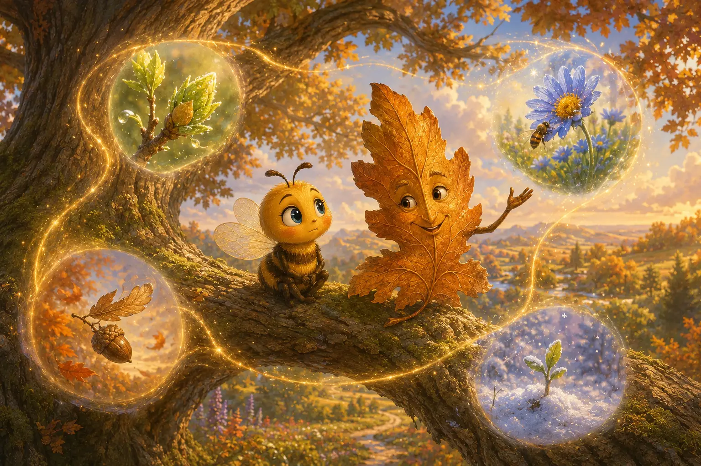
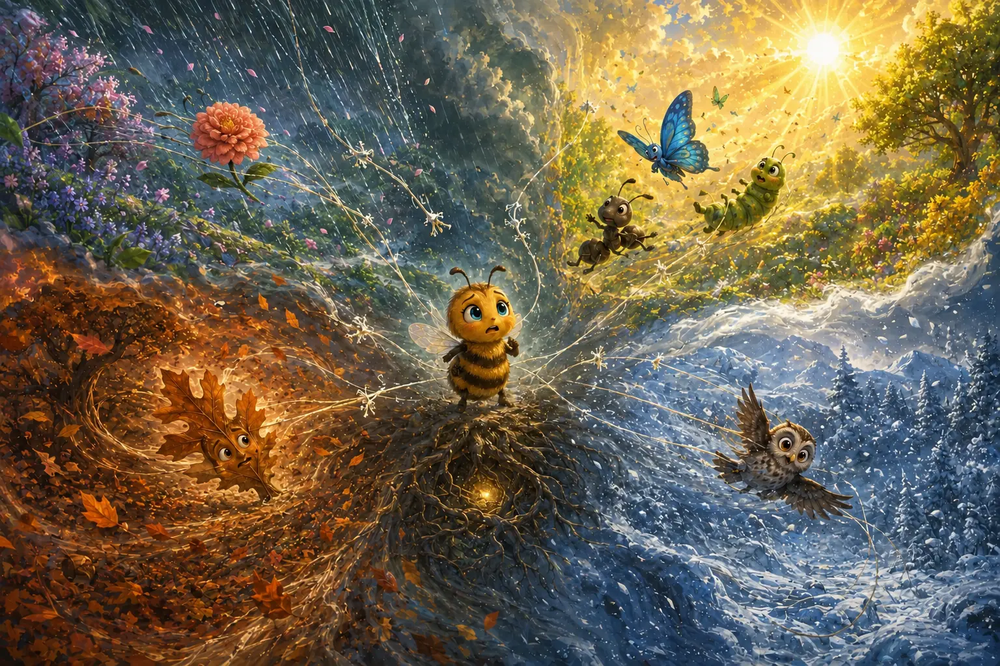
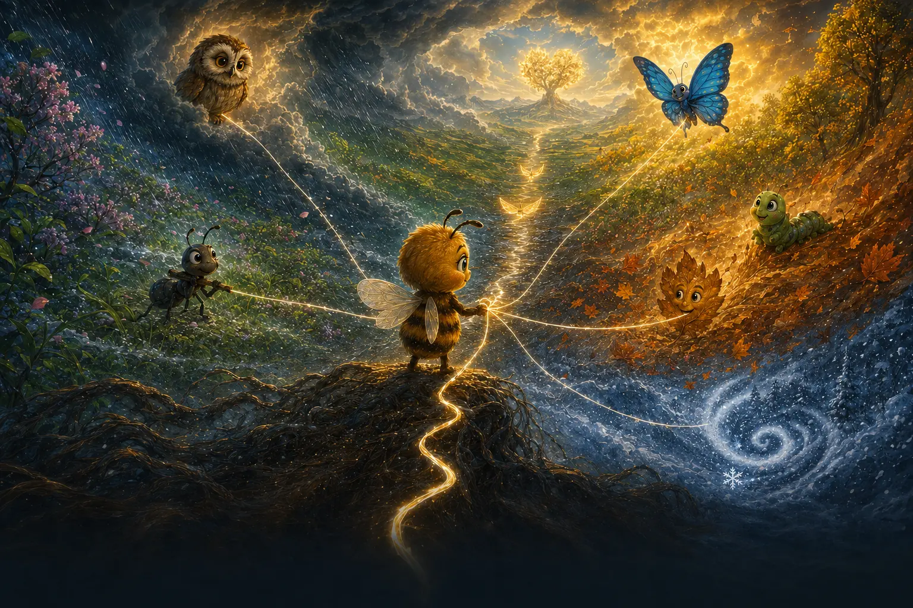

Chapter one
The Smallest Sound in the Garden
Every morning, Honeybell Garden woke in layers.
First came the drip-drip of dew. Then Samson Ant yelled, “Crumb coming through!” Esther Butterfly drew blue loops in the air, and Jonah Caterpillar took one extremely serious breakfast bite.
Last came Bea.
Bea visited one flower, then another, carrying yellow dust too light to hear and too small to count. By noon, the ants had raised a bridge. The hive had stacked a wall of honey. Esther had painted the sky.
Bea looked at her little wings.
“If my buzzing stopped,” she whispered, “would the garden even notice?”
Far beyond the meadow, thunder rolled.
Deep beneath the roots, the Heart of the Garden missed a beat.
Some important things begin too quietly to be noticed.
Visual description
Golden morning spills through a richly painted garden. Bea stands uncertainly on a purple flower while her friends work nearby. Fine golden lines hint that every small life is connected.

Choose one of Bea's very serious experiments.
Chapter two
The Bee Who Tried Everything
Bea decided small was the problem.
She tried carrying Samson’s crumb. It rolled over her.
“You had it upside down,” Samson said.
“It has an upside?”
She tried flying one of Esther’s graceful loops. She tied herself in a daisy.
She tried being still like Jonah.
After four seconds, Bea announced, “I have completed stillness.”
Jonah kept chewing. “That is not how stillness works.”
At last, Bea climbed the old oak to ask Solomon Owl how to become important. Halfway up, a gust flung her onto a broad copper leaf.
The leaf caught her as gently as a hand.
“Careful,” he rustled. “You almost flew past the answer while trying to look impressive.”
His name was Leif.
Being someone else is exhausting work.
Visual description
In dappled woodland light, Bea is tangled in a curling vine after several funny attempts to copy her friends. The old oak watches kindly from the background.

Chapter three
Leif and the Four Promises
Bea told Leif everything: the bridge, the honey wall, the terrible stillness.
Leif listened until her last worried buzz faded.
“Spring begins before it knows what will bloom,” he said. “Summer gives away what it grows. Autumn lets go so life can travel. Winter trusts what is alive beneath the silence.”
Bea frowned. “That sounds lovely, but what does it have to do with me?”
“A leaf can shade a nest, feed the soil, or shelter a seed. My purpose changes shape. It does not disappear.”
“But you can see those things.”
“Not when I begin them.”
Leif lifted gently in the breeze.
“You are not a tiny ant, butterfly, caterpillar, leaf, or owl. You are a perfectly sized Bea.”
The words warmed her.
They did not feel like proof. Not yet.
Purpose can change shape without disappearing.
Visual description
Bea and Leif share an old branch in warm sunset light. Four glowing globes around them hold miniature visions of the garden in each season.

Hold until the hidden thread appears. Keyboard: hold Space or Enter.
Chapter four
The Thread Between Things
Solomon landed above them with one feather pointing the wrong way.
“I meant to do that,” he said, smoothing it.
He led Bea to a flower she had visited the day before and forgotten. Now fruit swelled beneath its petals. An ant drank from its shade. A bird carried one seed away.
A silver-gold line shimmered among them, then vanished when Bea blinked.
“The Purpose Thread,” Solomon said. “Most good work travels farther than its maker can follow.”
“Then how do we know it matters?”
“We do not always know at first.”
Bea’s wings drooped.
Solomon softened. “Belief is not a blindfold, Beatrice. It is choosing the next kind thing before the ending is visible.”
“So belief is…work?”
“Often,” he said. “With inconvenient amounts of wind.”
Thunder answered from the hills.
The result may be hidden. The choice is still yours.
Visual description
Solomon, Bea, a bird, an ant, and a ripening berry gather around a bright knot of light. A golden thread passes from one life to the next across the valley.

Guide Bea toward Leif's shelter. Move your pointer, drag, or choose the seed.
Chapter five
The First Unseen Choice
The wind arrived before sunset.
It bent flowers flat and tore a sleeping seed from Marigold’s roots. Bea chased it over stones, under branches, and straight toward the flooded brook.
“Leave it!” cried Samson. “We have to get home!”
The seed looked empty. It did not glow. It did not promise anything.
Bea caught it anyway.
She fought back to the oak and tucked it beneath Leif, where his broad leaf covered it from the rain.
Nothing happened.
“No sparkle?” Bea panted.
“Seeds are famously private,” said Leif.
“Then how do we know I helped?”
“We don’t,” he replied. “Not tonight.”
For the first time, Bea found that answer frightening—and somehow brave.
Beneath Leif’s shelter, too deep for anyone to see, the seed split open.
She carried what might become—not what she could already prove.
Visual description
Cold rain races across a dark garden. Bea leans into the wind with a seed in her arms. Leif forms a shelter beside the oak while Samson urges her onward.

Chapter six
The Sky Breaks Four Ways
The Great Storm broke the sky into four.
Spring rain crashed through summer heat. Autumn leaves sliced across winter snow. The wind tore the Purpose Thread into twelve dim connections and hurled them through four seasons.
Marigold vanished into the rain.
Samson, Esther, and Jonah tumbled beyond the heat.
Leif was ripped from his branch.
Solomon disappeared into white.
The Heart of the Garden faded until only one pulse remained.
Bea called for everyone, but the storm swallowed her voice.
Then Solomon’s hoot reached her through the dark.
“A storm does not need to be cruel to be dangerous,” he said. “But it has hidden the path, not erased it.”
Four narrow currents opened in the sky.
Spring. Summer. Autumn. Winter.
All of them impossible.
All of them waiting.
The path was hidden. The purpose remained.
Visual description
The garden has become a vast four-season tempest. Water, sunlight, copper leaves, and snow spiral outward while Bea stands at the center and each friend is carried into a different current.

Chapter seven
The Promise Before the Flight
Through the torn Purpose Thread, voices reached Bea from every season.
“Restore the twelve connections,” Solomon called. “Awaken Spring. Carry Summer’s sweetness. Shelter tomorrow in Autumn. Believe through Winter. Then bring the Seed of Spring to the Heart.”
Esther’s voice danced through the wind. “Watch for golden wing emblems. Gather three, and the hidden current will become a Wing Burst.”
Bea stared into the four-way sky.
“What if I am still too small?”
“Small fits where big cannot,” said Samson.
“Small can change direction,” said Esther.
“Small can become,” said Jonah.
“Small can shelter,” rustled Leif.
“Small can begin,” said Solomon.
Bea’s wings shook.
She let them.
Courage, she realized, was not waiting until fear disappeared. It was taking off while fear came along.
Bea could carry hope. She could choose kindness. But she could not see the whole path.
That was where you came in.
Bea looked beyond the edge of the page.
“You point. I buzz. If we get lost, we call it exploring.”
The hidden thread reached from Bea to your hand.
You did not have to see the whole path.
You only had to begin.
You do not have to see the whole path. You only have to begin.
Visual description
Bea faces a shadowed valley where all four seasons meet. Fine golden paths connect her to every friend, then climb toward the Heart of the Garden glowing beyond the storm.